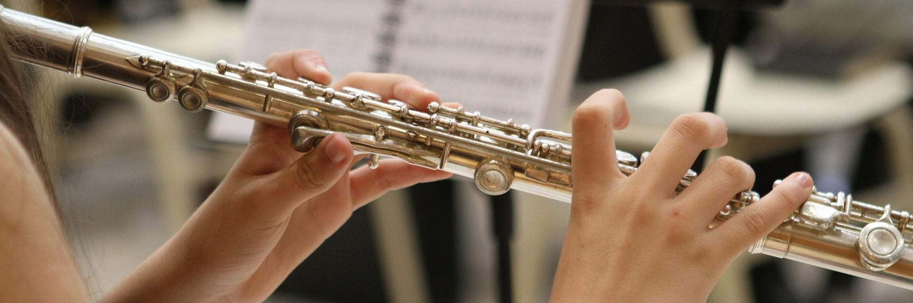

Flute

POPULARITY
The flute is one of the oldest instruments around, and one of the most diverse. It is virtually ubiquitous in every culture of the world.
DIFICULTY LEVEL
The flute is a medium difficulty instrument to learn. The flute fingerings and care of the instrument are easy to handle. Producing sound and playing the more challenging music associated with the flute, however, is a challenge for some. Fortunately, it's easy to work around these with the right help.
TIME TO LEARN
hands and fingers, innovative teachers have expertly demonstrated that young children can successfully produce a beautiful sound on the flute and begin to learn how to play at age 4, 5, 6 years of age depending on the child's level of interest and ability to focus for short periods of time.
PRICE
It is one of the low budget musical instrument to start learning Avg cost is about Rs.2000
The flute is one of the oldest instruments around, and one of the most diverse. It is virtually ubiquitous in every culture of the world.
DIFICULTY LEVEL
The flute is a medium difficulty instrument to learn. The flute fingerings and care of the instrument are easy to handle. Producing sound and playing the more challenging music associated with the flute, however, is a challenge for some. Fortunately, it's easy to work around these with the right help.
TIME TO LEARN
hands and fingers, innovative teachers have expertly demonstrated that young children can successfully produce a beautiful sound on the flute and begin to learn how to play at age 4, 5, 6 years of age depending on the child's level of interest and ability to focus for short periods of time.
PRICE
It is one of the low budget musical instrument to start learning Avg cost is about Rs.2000